Global Day of Code Retreat
2022
facilitated by  145ferdi (
145ferdi ( ferdi145) &
ferdi145) &  , agebhar1
, agebhar1
hosted by codecentric AG Leipzig, Germany
Schedule of the day
- Welcome/Introduction
- Session 1-3
- Lunch & Socializing
- Session 4-6
- Closing Circle
Test Driven Development

CC BY-SA http://www.growing-object-oriented-software.com
4 Rules of Simple Design
originally by Kent Beck in late 90's
- Passes all Tests
- Express Intent (Clear, Expressive & Consistent)
- No duplication (DRY)
- Minimal methods, classes & modules (no superfluous abstraction)
Conway's Game of Life
- devised by John Horton Conway, 1970
- a 2D cellular automaton
- regular grid of cells (potential infinite)
- cell's state \[ \in \{ dead, alive \} \]
- neighborhood (set of cells)
- new generation by applying set of rules
Rules
Generation \[ x \to \] Generation \[ x+1 \]
Let's have fun today!